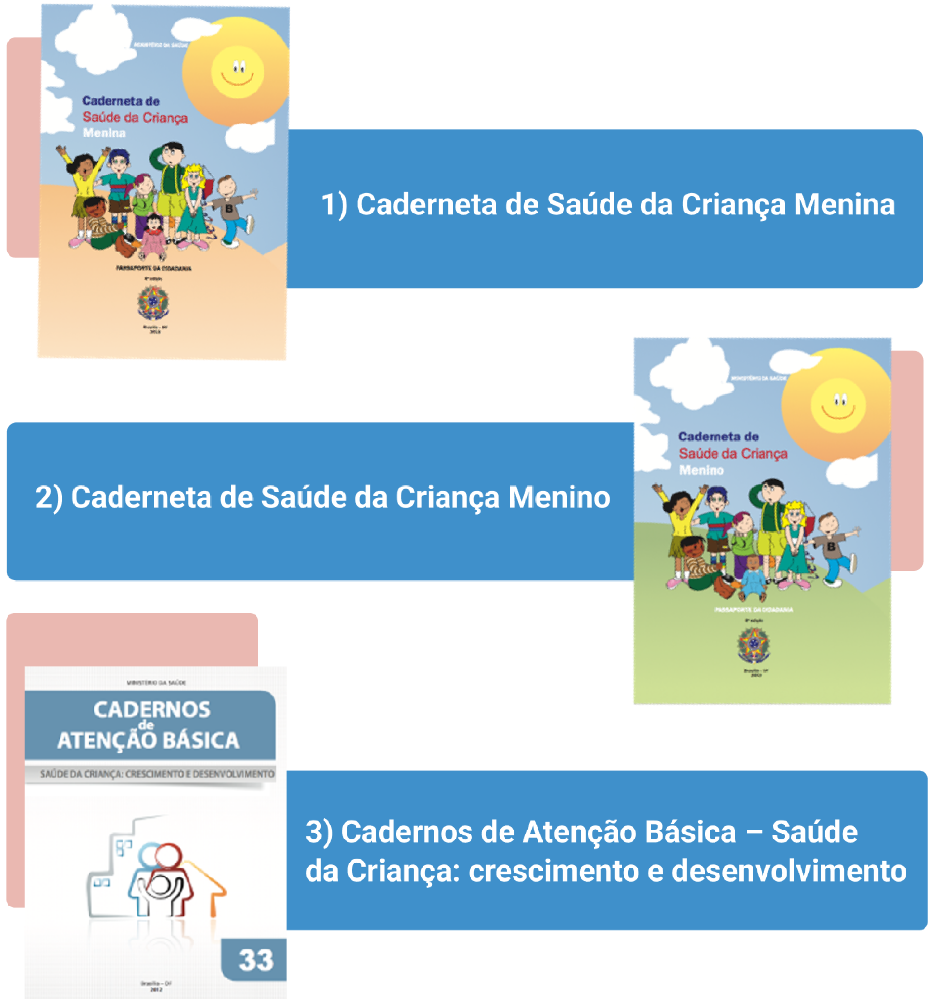

MENU
Sobre as autoras
Psicóloga e Advogada. Especialista em Intervenções em Psicologia Social e Comunitária pela Faculdade Frassinetti do Recife, FAFIRE (2017). Mestranda no Programa de Pós-graduação em Educação, Culturas e Identidades da UFRPE/FUNDAJ. Membro do Grupo de Estudo Transdisciplinar da Infância e Juventude (GETIJ). Atendente voluntária no canal Pode Falar – UNICEF
Psicóloga, doutora em psicologia social pela Pontifícia Universidade Católica de São Paulo (PUC-SP) e mestre em Saúde Mental pela Faculdade de Ciências Médicas da Universidade Nova de Lisboa, Portugal. Os principais temas em que atua são saúde mental, saúde mental infantojuvenil, justiça, gênero, drogas e direitos humanos. Atualmente, é professora do curso de Graduação em Psicologia da Universidade Mackenzie em São Paulo-SP; professora e supervisora da Residência Médica em Psiquiatria em Rede (SUS) da 8 Coreme, da Prefeitura de São Paulo; e supervisora de CAPSij, na cidade de São Paulo.
Psicóloga. Trabalhadora do SUAS. Mestranda em Educação, Culturas e Identidades pela Universidade Federal Rural de Pernambuco (UFRPE). Especialista em Direitos da Criança e do Adolescente pela Universidade Federal Rural de Pernambuco (2021), Especialista em Saúde Mental e Intervenções Psicossociais pela UNIFAVIP DEVRY (2011). Pesquisadora no Grupo de Estudo Transdisciplinar da Infância e Juventude (GETIJ). Membro do Núcleo do Cuidado Humano da UFRPE. Atendente voluntária no canal Pode Falar – UNICEF.
Psicóloga e Bacharel Interdisciplinar em Humanidades (UFBA). Doutoranda e Mestra em Bioética (UnB). Membra-fundadora da Associação Brasileira de Estudo e Prevenção do Suicídio (ABEPS). Pesquisadora do Observatório de Direitos Humanos dos Pacientes (ODHP). Autora do livro Deverei velar pelo Outro? Suicídio, estigma e economia dos cuidados.
Médica pediatra. Mestra em Saúde da Família e Comunidade pela Fiocruz. Doutoranda em Saúde e Desenvolvimento na Região Centro-Oeste pela UFMS. Pós-graduada em psiquiatria infantil. Professora do curso de medicina da Universidade Anhanguera (UNIDERP) e da Universidade Estadual do Mato Grosso do Sul.
Módulo: Espaços de cuidado: construindo possibilidades de vida
Instruções para navegação
- Você pode ajustar a visualização do material de acordo com o nível de zoom do seu navegador, pressione:
CTRL + + : Aumentar o zoom
CTRL + - : Diminuir o zoom
SOBRE O MÓDULO
Espaços de cuidado: construindo possibilidades de vida
Carga horaria: 20 horas
OBJETIVO DE APRENDIZAGEM
Possibilitar uma aproximação/familiarização com os Espaços de cuidado, apresentando seu papel e finalidade, composição e funcionamento, assim como as atribuições do agente de cuidado.
Conteúdo
Conhecimentos
Habilidades
Apresentação do Módulo
Olá! Seja muito bem-vindo ao módulo 6! Este é o trecho final desse percurso formativo. Neste módulo, pensamos em trazer para o centro do debate a importância de fomentar outros espaços de cuidado, assim como de pensar no fortalecimento de diversos agentes de cuidado que estão no território, mas que, não necessariamente, estejam compondo a rede de serviços já instituída. A intenção é garantirmos o princípio de prioridade absoluta estabelecido no Estatuto da Criança e do Adolescente (ECA). É dever de toda a sociedade garantir direitos e cuidado para essa população.
Pensamos em problematizar pontos que nos autorizem a escutar adolescentes e jovens, entendendo que isso não é uma tarefa exclusiva dos especialistas da área, uma vez que a saúde mental de adolescentes e jovens está presente e demanda acolhimento em muitos espaços.
Para iniciar essa conversa, trouxemos o caso complexo “A comunidade de Monte Verde: construindo espaços de cuidado e vida”, que retrata a história de jovens ribeirinhos, com vidas atravessadas por um cenário de exploração e pobreza, mas que encontram, em alguns agentes e parceiros, a possibilidade de construir um outro espaço de escuta e acolhimento.
Chamaremos aqui tais construções de “espaços de cuidado”, por entendermos que estes podem ser múltiplos e diversos, não necessariamente aqueles instituídos pelas políticas públicas, que são serviços formais. Pretendemos mostrar que os espaços de cuidado podem surgir em qualquer lugar como resultado das relações entre as pessoas, inspirando, portanto, múltiplas e novas formas de cuidado, de acordo com as possibilidades da sua atuação e/ou trabalho.
Ao longo deste módulo, sugeriremos algumas atribuições para o exercício da escuta, passando por algumas habilidades essenciais para o acolhimento de adolescentes e jovens, como a escuta empática e o afastamento de julgamentos morais, e, por fim, pensaremos em algumas considerações éticas para realizar modos potencializadores e coletivos de cuidado.
NÚCLEOS DE ESPAÇOS DE CUIDADO: CONSTRUINDO PROPOSTAS
NÚCLEOS DE ESPAÇOS DE CUIDADO: CONSTRUINDO PROPOSTAS
Chegamos ao último módulo e pensamos que esse seja um espaço precioso por trazer ao cerne do debate os adolescentes e jovens como prioridade absoluta, ou seja, toda a sociedade tem responsabilidade ética de acolher e cuidar dessa população.
Pensamos em problematizar pontos que nos autorizem a escutar esse público, entendendo que isso não é uma tarefa única dos especialistas e que a questão da saúde mental de adolescentes e jovens pode ter lugar e acolhimento em muitos espaços, que, aqui, serão denominados de “espaços de cuidado”, justamente por entender que esses lugares podem ser múltiplos e diversos, não necessariamente precisam ser aqueles instituídos pelas políticas públicas.
Estamos querendo mostrar que os espaços de cuidado podem surgir em qualquer lugar, através das relações entre as pessoas.
Profissionais dos campos da saúde, assistência social e educação costumam pensar em como intervir em situações de sofrimento. Isso também ocorre com familiares, amigos, vizinhos, entre outros. Situações de sofrimento podem mobilizar cuidado e, em outros casos, podem afastar, em virtude de se temer uma intervenção equivocada. Aqui, imaginamos que um lugar de escuta e de acolhimento é precioso e que esse acolhimento pode ser feito por diferentes atores, tanto na rede formal de serviços, quanto em redes informais, nos territórios em que a vida acontece.
Para ampliarmos essa conversa, decidimos compartilhar um pouco da história de cuidado de crianças, adolescentes e jovens, na intenção de pensarmos juntos formas de fazer e tecer esse cuidado.
Você sabia que o cuidado de crianças e adolescentes tem uma longa história no Brasil? Indicamos e situamos alguns dos marcos legais no campo da infância e da adolescência que antecederam o Estatuto da Criança e do Adolescente (ECA), como legislações que traziam uma marca de criminalização da infância pobre e de suas famílias. Mostramos a seguir, na linha do tempo, algumas questões centrais dessa história:
Linha do tempo - legislação e principais pontos de cada
Foi somente após a promulgação da Constituição Federal de 1988 – marco de restabelecimento de um Estado Democrático de Direito no Brasil – que entrou em vigor o Estatuto da Criança e do Adolescente (ECA) (BRASIL, 1990), que passa a considerar crianças e adolescentes como sujeitos de direitos, abolindo definitivamente o termo “menor” e as “práticas menoristas", marca central dos códigos anteriores. Calcado na perspectiva da doutrina da proteção integral, o ECA abandonou o foco no assistencialismo para a população de 0 a 18 anos e redirecionou as ações do Estado para a proteção integral de crianças e adolescentes. O ECA afirma que a proteção somente será efetiva através da implantação de políticas públicas voltadas à cidadania plena.
Apesar do reconhecimento dos avanços no Sistema de Garantia de Direitos da Infância e da Adolescência, ainda percebemos que estão vigentes crenças e valores morais semelhantes aos antigos códigos. Esse fator determina a necessidade de ampliar a discussão sobre ações de proteção, garantindo atuações éticas para uma efetiva proteção de crianças e adolescentes.
Quando pensamos na questão do cuidado em saúde mental, remetemo-nos logo à questão da escuta, existindo, em muitos casos, a prática de uma “pretensa proteção”, justificando a aplicabilidade do “melhor interesse” da criança (princípio central do ECA). Contudo, é importante percebermos que muitas pessoas, inclusive trabalhadores de diferentes campos das políticas públicas da saúde, assistência e educação, baseando-se em uma lógica adultocêntrica, julgam saber o que é melhor para as crianças, como podemos perceber no caso complexo deste módulo, quando o seu Cleiton aponta caminhos na intenção de ajudá-los, mas sem verdadeiramente escutar as demandas que Maurício e seus amigos tinham.
Pensando nessa perspectiva, a autora Maria Cristina Vicentin (2016) produziu um importante debate para apresentar o conceito de descriançavel, que envolve um entendimento daquelas práticas que não acolhem as crianças e adolescentes. Diz a autora:
Como resposta a estas “práticas de sufocamento”, a autora (VICENTIN, 2016, p. 31) nos dá pistas para pensarmos em práticas “criançáveis”, mostrando caminhos para visualizarmos “onde estão os manicômios infantis e juvenis nos dias de hoje” e onde estão “as situações de perigo” e, por fim, como pensar em “descolonizar a infância”, com base na afirmação de práticas criançáveis¹. A seguir, detemo-nos em duas “situações de perigo” que a autora nos apoia nessa discussão:
Seguem sugestões de materiais que podem ser utilizados para aprofundar seus estudos:
Para além dos espaços instituídos nas políticas públicas que acabamos de citar, é importante valorizarmos as redes de apoio que vão sendo construídas ao longo da vida, como a família, amigos e comunidade. Você consegue pensar em espaços de cuidado e escuta a que você tinha acesso na sua adolescência?
CONHECIMENTOS E HABILIDADES ESSENCIAIS PARA A ESCUTA DE ADOLESCENTES E JOVENS: COMUNICAÇÃO PRECISA; ABORDAGEM INICIAL; CONTINUIDADE DO ATENDIMENTO
Sempre vejo anunciados cursos de oratória. Nunca vi anunciado curso de escutatória. Todo mundo quer aprender a falar. Ninguém quer aprender a ouvir. Pensei em oferecer um curso de escutatória. Mas acho que ninguém vai se matricular. Escutar é complicado e sutil…
Parafraseio o Alberto Caeiro: “Não é bastante ter ouvidos para ouvir o que é dito; é preciso também que haja silêncio dentro da alma”. Daí a dificuldade: a gente não aguenta ouvir o que o outro diz sem logo dar um palpite melhor, sem misturar o que ele diz com aquilo que a gente tem a dizer... Nossa incapacidade de ouvir é a manifestação mais constante e sutil de nossa arrogância e vaidade: no fundo, somos os mais bonitos...
Tenho um velho amigo, Jovelino, que se mudou para os Estados Unidos estimulado pela revolução de 64. Contou-me de sua experiência com os índios. Reunidos os participantes, ninguém fala. Há um longo, longo silêncio. (Os pianistas, antes de iniciar o concerto, diante do piano, ficam assentados em silêncio, abrindo vazios de silêncio, expulsando todas as ideias estranhas). Todos em silêncio, à espera do pensamento essencial
Não basta o silêncio de fora. É preciso silêncio dentro. Ausência de pensamentos. E aí, quando se faz o silêncio dentro, a gente começa a ouvir coisas que não ouvia. Eu comecei a ouvir.
Fernando Pessoa conhecia a experiência, e se referia a algo que se ouve nos interstícios das palavras, no lugar onde não há palavras. A música acontece no silêncio. A alma é uma catedral submersa. No fundo do mar – quem faz mergulho sabe – a boca fica fechada. Somos todos olhos e ouvidos. Aí, livres dos ruídos do falatório e dos saberes da filosofia, ouvimos a melodia que não havia, que de tão linda nos faz chorar.
Para mim, Deus é isto: a beleza que se ouve no silêncio. Daí a importância de saber ouvir os outros: a beleza mora lá também. Comunhão é quando a beleza do outro e a beleza da gente se juntam num contraponto. Ouçamos os clamores dos famintos e dos despossuídos de humanidade que teimamos a não ver nem ouvir. É tempo de renovar, se mais não fosse, a nós mesmos e assim nos tornarmos seres humanos melhores, para o bem de cada um de nós.
É chegado o momento, não temos mais o que esperar. Ouçamos o humano que habita em cada um de nós e clama pela nossa humanidade, pela nossa solidariedade, que teima em nos falar e nos fazer ver o outro que dá sentido e é a razão do nosso existir, sem o qual não somos e jamais seremos humanos na expressão da palavra.
Alves, 1999
É comum vermos pessoas exaltando a importância de falar, principalmente de falar bem, ter boa oratória, uma fala eloquente, mas será que as pessoas também compreendem e valorizam a importância de escutar, de saber escutar?
Rubem Alves chama a atenção para isso no início do seu texto. Ele diz da existência de muitos cursos de oratória e da ausência de cursos de escutatória. Percebemos isso como uma realidade, a escassez de pessoas disponíveis para escutar, e, quando nos referimos a escutar adolescentes e jovens, essa indisponibilidade se evidencia ainda mais.
Primeiramente, vamos fazer uma distinção entre escutar e ouvir. “Do ponto de vista conceitual, escutar é diferente de ouvir. Escutar remete a aderir ao que se ouve, e ouvir não implica adesão. Aderir é se permitir ouvir quem nos fala – ainda que não acordemos com aquilo que é dito por quem nos fala” (FERREIRA, 2022, p. 128). Nessa perspectiva, ouvir limita-se à função orgânica. Já escutar remete a ser afetado, a sentir o que é trazido pela fala do outro.
É importante ressaltar que, quando falamos de escuta, estamos nos referindo a um modo de cuidado não exclusivo de determinada área do saber.
Não se trata de uma escuta exclusiva de profissionais especialistas da saúde mental, ou mesmo a escuta realizada no atendimento clínico psicológico. Esses locais de escuta especializada instituídos formalmente são legítimos, importantes e indispensáveis em casos específicos. Contudo, precisamos estar atentos para o fato de que eles não são os únicos lugares e modos de escuta possíveis. Como já vimos, os lugares e os modos de escuta podem e precisam ser ampliados.
Então, de qual escuta é essa que estamos falando? A escuta a que nos referimos aqui é uma ferramenta e uma habilidade que toda pessoa humana é capaz de desenvolver. É um instrumento vital para a relação humana. Pensando nessa relação numa perspectiva dialógica, em que uma pessoa se coloca diante da outra em uma atitude de respeito, presença, horizontalidade, igualdade e inteireza. Martin Buber (1977) aponta que o ser humano tem a capacidade de inter-relacionamento com seu semelhante. Essa relação eu-tu acontece no encontro verdadeiro de duas pessoas e se expressa pela habilidade da escuta.
Para a prática dessa escuta, à qual podemos nos referir como uma escuta ativa, afetiva, amorosa, empática e acolhedora, não existe uma receita pronta ou uma regra rígida a ser seguida. Estamos falando de algo que se estabelece na complexidade e na individualidade de cada relação, sem modelos preestabelecidos. No entanto, existem “habilidades” potencializadoras dessa escuta.
Inicialmente, o estabelecimento de vínculo entre a pessoa que escuta e a pessoa que fala é imprescindível. Nesse sentido, quem escuta precisa estar disponível para a relação mais próxima, simétrica e igualitária possível. A pessoa que escuta precisa ter cuidado para não se colocar no lugar de distanciamento e de superioridade em relação àquele que fala, evitando uma postura adultocêntrica, como já mencionado anteriormente.
A arte de escutar demanda da pessoa que se propõe a fazê-la a atitude de se esvaziar de si. Esse esvaziar-se, como menciona Rubem Alves em seu texto, requer, muitas vezes, o silêncio.
A receptividade é uma estratégia importante no contexto da escuta de adolescentes e jovens. É a atitude de acolher sem julgamento o que o outro diz. Isso não significa concordar com tudo que o adolescente ou o jovem fala nem aceitar comportamentos negativos. No entanto, quer dizer aceitar as suas emoções, legitimar seus sentimentos e dar espaço para que ele possa expressar o que sente e vive.
Só é possível conhecer alguém se a pessoa que ouve se dispuser a escutar o outro que fala como ele é e não como queria que ele fosse. Por meio de uma atitude receptiva, pode ser possível compreender o que é trazido pelo outro, o que está acontecendo com ele e, a partir daí, pensar os cuidados que ele precisa.
Quando nos referimos ao que é trazido ou dito pelo adolescente ou jovem é importante destacar que esses modos de dizer nem sempre são verbais. A comunicação ocorre de modos variados, inclusive de modo não verbal. Por isso é preciso estar atento para as atitudes, expressões, gestos, atos corporais e até mesmo o silêncio, que em alguns casos também está a serviço da comunicação.
Voltando às habilidades que favorecem a escuta acolhedora, vamos pensar na postura empática, que é tentar se colocar no lugar do outro. A empatia seria a capacidade de estar junto do outro para sentir o que ele sente, legitimando as emoções sentidas pelo outro. Brené Brown (2016) estuda a empatia e diz que ela consiste em quatro atitudes: assumir a perspectiva da outra pessoa; não julgar; reconhecer a emoção do outro; e comunicar essa emoção.
Saiba mais
Animação: O poder da empatia.
Quando se está diante do relato de uma situação difícil vivida pelo outro, é comum se ter o impulso de tentar amenizar a situação. O uso de argumentos de conforto precisa ser ponderado, pois pode gerar o efeito negativo de fazer o outro não se sentir compreendido. Por outro lado, a postura empática, a de tentar compreender a perspectiva vivida pelo outro naquele contexto, sem julgamentos e buscando reconhecer e comunicar as emoções que ele vive, favorece a conexão e pode trazer benefícios.
Compreendemos que a escuta é uma alternativa para lidar com a dor e com o adoecimento. Ela, por si só, é uma estratégia potente, que pode repercutir de modo positivo em muitos casos. No entanto, é importante que a pessoa que escuta conheça seus limites e reconheça que determinadas questões identificadas podem demandar de apoio de algum serviço e/ou atendimento especializado. Por isso é de suma importância conhecer a rede de serviços existente em seu território.
Como já foi mencionado anteriormente, a escuta à qual nos referimos aqui não se refere a uma escuta exclusiva de determinada área do saber, muito menos a uma escuta clínica terapêutica. Diversas pessoas que tenham interesse no cuidado de adolescentes e jovens podem ser agentes e promotores de cuidado.
FUNÇÕES, ATRIBUIÇÕES E LIMITES DO AGENTE DE CUIDADO
FUNÇÕES, ATRIBUIÇÕES E LIMITES DO AGENTE DE CUIDADO
Há algo nos seres humanos que não se encontra surgido há milhões de anos no processo evolutivo quando emergiram os mamíferos, dentro de cuja espécie nos inscrevemos: o sentimento, a capacidade de emocionar-se, de envolver-se, de afetar e de sentir-se afetado. Um computador e um robô não têm condições de cuidar do ambiente, de chorar sobre as desgraças dos outros e de rejubilar-se com a alegria do amigo. Um computador não tem coração. Só nós humanos podemos sentar-nos à mesa com o amigo frustrado, colocar-lhe a mão no ombro [...] e trazer-lhe consolação e esperança. Construir o mundo a partir de laços afetivos. Esses laços tornam as pessoas e as situações preciosas, portadoras de valor. Preocupamo-nos com elas. Tomamos tempo para dedicar-nos a elas. Sentimos responsabilidade pelo laço que cresceu entre nós e os outros. A categoria cuidado recolhe todo esse modo de ser. Mostra como funcionamos enquanto seres humanos.
(Boff, 2015).
Leonardo Boff nos mostra a nossa capacidade humana de sentir, de chegar perto de outra pessoa, de afetar e ser afetado pelo outro, de formar laços, fazer vínculos e cuidar. E ao cuidarmos uns dos outros nos aproximamos do que há de mais humano em nós. É esse o lugar do agente de cuidado.
Você já presenciou algum jovem contando uma história que aconteceu com ele para um amigo? Percebeu como eles dão ênfase às palavras, ficam empolgados e carregam a fala de emoções? É dessa forma que muitos jovens chegarão até você. Outros falarão baixo, com pouca expressividade. Há também um grupo que, simplesmente, não fala, apenas acena com a cabeça e responde monossilabicamente às nossas perguntas. Esses serão alguns dos jovens que irão aparecer em nossas salas de aula, cozinhas, corredores de hospitais, centros comunitários, associações, vizinhança e, até mesmo, dentro das nossas próprias casas.
O que nós precisamos vivenciar com esses jovens é uma comunicação, um dialogar. O diálogo é uma ponte que leva o ser humano a se aproximar de outro ser humano. E para que esse diálogo possa fluir é essencial ser capaz de ouvir quem me fala, mesmo que eu discorde, ainda que seja diferente do que penso, do que sinto, mas eu respeito, eu escuto (FERREIRA, 2022).
Algumas vezes, esses meninos e meninas farão pedidos diretos de ajuda a você; outras vezes esses pedidos não serão muito claros; e haverá pedidos quase imperceptíveis. Em qualquer circunstância, é primordial estar atento e disponível para oferecer a escuta, o apoio, a ajuda.
Um jovem pode procurar você com demandas variadas. Ele pode, por exemplo, estar vivenciando uma angústia enorme, e encontrar você em um corredor da escola pode trazer a ele a ideia de não estar sozinho e de não ser necessário tomar uma decisão precipitada (VERAS, 2020, p. 298)
Você percebe a importância do seu papel nessas situações? A sua escuta pode trazer alívio ao jovem que conversa com você. E poder proporcionar isso ao outro é algo extremamente gratificante.
Ouça a música “Laços”, de autoria de Nando Reis
Assim, para escutar um jovem, precisamos estar interessados na sua fala e na sua história, assim como nos aproximar dele. Quem pode oferecer a escuta? Eu, você e qualquer pessoa interessada em tentar ajudar pode! A escuta deve ser livre de preconceitos e julgamentos, não seguir uma fórmula pronta nem produzir frases feitas; deve ser uma escuta de respeito ao outro e de liberdade. Devemos ouvir sempre mais, a ponto de promover a desconstrução de certezas consolidadas. Esse caminho nos leva à reconstrução de nós mesmos, com novas ideias, novos saberes, novos olhares.
Atribuições e competências dos agentes de cuidado:
Conhecer a si mesmo (autoconhecimento), conhecer seus limites, suas características, habilidades, valores e crenças. O autoconhecer-se é um dos fatores de proteção à nossa saúde mental.
Acolher os jovens, oferecendo uma escuta acolhedora que possibilite a expressão dos sentimentos e a compreensão, sem avaliação e sem julgamento, estabelecendo uma relação saudável, de respeito e de empatia com os jovens.
Promover a saúde mental escutando as demandas dos adolescentes, realizando orientações e até mesmo encaminhamentos para serviços de saúde mental, como os Centro de Atenção Psicossocial (CAPS), e buscando um estado de bem-estar usando habilidades para lidar com aquilo que vive e atuar na comunidade em que vive.
Promover a criação de espaços para que os jovens possam se cuidar, como espaços em associações de moradores, escolas e até mesmo na garagem de Dona Lourdes, como aconteceu no caso complexo.
Procurar informações sobre temas de interesse dos jovens, que poderão variar tanto inter, quanto intra-territorialmente. Lembrar-se de que tudo precisa ser pensado para os jovens e com os jovens. O protagonismo juvenil é importante nos espaços de cuidado.
Realizar os primeiros socorros emocionais (PSE) (UNICEF, 2021). São eles: oferecer apoio e ajuda; perguntar o que a pessoa precisa ou como você pode ajudar; ver se a pessoa está com fome, sede ou precisa saber de alguma coisa; ouvir com atenção sem forçar a pessoa a falar nada nem julgar o que diz; falar coisas que possam ajudá-la a se sentir melhor ou ficar mais calma; proteger a pessoa.
Ao pensar em todas essas atribuições, você se pergunta: será que tudo isso será muito pesado para mim? Será que eu vou dar conta?
Nesses casos, precisamos pedir ajuda. Quem cuida do cuidador? Como estou me sentindo com tudo isso que está acontecendo com esse jovem? Buscar ser verdadeiro com você mesmo, pedir ajuda a um colega e procurar serviços estratégicos voltados à saúde mental são possibilidades para melhorar a sua escuta e o seu acolhimento das situações difíceis vivenciadas pelos jovens. Você também pode participar de capacitações, formações e cursos para compreender e utilizar técnicas que facilitam o processo de comunicação e reconhecimento dos limites e potencialidades da atuação.
ÉTICA E SIGILO DAS INFORMAÇÕES
ÉTICA E SIGILO DAS INFORMAÇÕES
Ética é tradicionalmente entendida como um estudo ou uma reflexão sobre as ações humanas (VALLS, 2017). A ética, na prática, convida a pensar e a responder questões sobre como se deve agir em sociedade. Esse convite está sendo feito a você. Discutimos até aqui questões voltadas para o cuidado da saúde mental de adolescentes e jovens. Discorremos sobre diferentes espaços e ambiências em que esse cuidado pode e deve acontecer; sobre a prática da escuta acolhedora; sobre habilidades que favorecem a escuta; e sobre a atuação daqueles que atuam nessa frente, a quem chamamos de agentes de cuidado. Abrimos agora um espaço para pensarmos sobre a atuação ética dos agentes de cuidado.
A atuação do agente de cuidado é tecida à disponibilidade e à necessidade de se deixar desconstruir pelo outro.
Não há fórmula, receita, respostas prontas ou universais. Porém, esse fazer sempre deverá estar atrelado a:
Sabe-se que profissões regulamentadas têm seus códigos de ética para subsidiar as reflexões de cada profissional acerca de sua prática. O objetivo de um código de ética não deve ser engessar e normatizar o trabalho, mas assegurar, de acordo com os padrões estabelecidos socialmente, direcionamentos para as profissões. Nesse sentido, destacamos o valor desses códigos de ética, sendo relevante que profissionais que os tenham baseiem suas práticas nesses documentos.
A perspectiva ampliada proposta neste módulo, em consonância com as discussões da política de saúde mental, convoca ao lugar de agente de cuidado pessoas variadas (profissionais de saúde, profissionais da assistência social, professores e demais profissionais de educação, enfim, pessoas da sociedade em geral). Ainda que alguns desses profissionais não tenham código de ética específico, a conduta ética deve sempre nortear as intervenções. Algumas legislações, como a Declaração Universal dos Direitos Humanos, o Estatuto da Criança e do Adolescente (BRASIL, 1990) e o Estatuto da Juventude (BRASIL, 2013), também trazem contribuições para a atuação diante da escuta e do trabalho com adolescentes e jovens.
Em consonância com a ética, o sigilo das informações deve ser prioridade, com vistas a proteger a confidencialidade e a intimidade das pessoas. A quebra do sigilo só deve ocorrer diante de situações que ponham em risco a vida do adolescente ou jovem. A quebra do sigilo deve ser eventual, limitada a informações estritamente necessárias e baseada sempre na busca pelo menor prejuízo. É relevante que qualquer decisão relacionada à quebra de sigilo deva priorizar o diálogo com esse adolescente ou jovem.
Ressaltamos que a quebra do sigilo de fato deve ser utilizada apenas se estritamente necessária, tendo em vista os riscos que essa quebra de sigilo pode acarretar. Pode gerar, a depender do caso: a) a ruptura da confiança e do vínculo, levando esse adolescente ou jovem a não mais confiar em se abrir e pedir ajuda a outras pessoas; b) a potencialização do risco ou revitimização da pessoa.
Em outras palavras, a quebra do sigilo só pode ser feita após alguns critérios serem analisados: existe algum outro caminho que não seja a quebra de sigilo? Existe de fato um risco iminente à vida desse adolescente ou jovem que justifique a quebra de sigilo? Com a quebra do sigilo, haverá mais efeitos positivos ou negativos?
Vamos pensar aqui em uma situação proposta por Ana Marta Lobosque (2019) para subsidiar a nossa reflexão. A autora levanta uma discussão que aborda situações de automutilação em meninas, mas podemos utilizá-la de modo mais ampliado. Lobosque aponta que, diante de casos de automutilação de meninas, a pessoa que escuta e/ou percebe a situação corre dois riscos: o primeiro risco é “o da recusa, uma interpretação que privilegia a minimização da dor do outro, a simulação, problemas falsos, indignos de atenção; o segundo risco é o de alarme, cujo apelo captura-nos em demasia, especialmente pelo temor do risco de suicídio, acionando estratégias, por vezes exageradas, que podem levar à patologização e medicalização excessiva, e até institucionalização.
Diante de casos de autolesão, com ideação suicida ou mesmo situação de violência vivenciada pela adolescente, o agente de cuidado precisa avaliar a situação com cautela: nem pode ser “duro demais” e nem ser movido pela excessiva sensibilização e tomar atitudes precipitadas; ser cuidadoso para não romper o sigilo como um modo de autoproteção ou com a finalidade de tentar “resolver o problema” de forma imediatista. Nesses casos mais complexos, é muito importante pensarmos em acionar a rede de serviços de saúde, como os Centros de Atenção Psicossocial (CAPS). Na ausência de um CAPS infantojuvenil, você pode buscar o CAPS adulto ou até mesmo a sua Unidade Básica de Saúde (UBS).
Saiba mais
É importante compartilhar com adolescentes e jovens em geral alguns números de contato, como:
CAPS
CRAS
Disque 100 (Disque Direitos Humanos), para casos de Violência
Disque 180, para casos de violência doméstica
CVV 188
Site www.canaldeajuda.org.br, para casos de vítima ou
testemunha de
cyberbullying
Site Pode Falar,
canal de escuta 24h para adolescentes e jovens
Site Como comunicar uma situação de perigo - Comissão
Nacional de Promoção
dos Direitos e Proteção das Crianças e Jovens (cnpdpcj.gov.pt)
Nesse sentido, qualquer discussão ética a respeito do sigilo e da postura dos agentes de cuidado deve estar vinculada a uma escuta atenta, cuidadosa, que busque acolher, compreender, estar junto desse adolescente ou jovem, trilhando novos caminhos e novas possibilidades, sempre em uma perspectiva de respeito e cuidado.
Dessa forma, retomamos o caso complexo, que ocorreu na cidade de Monte Verde, em que os próprios moradores pensaram em um espaço de cuidado e vida para adolescentes e jovens. Em seu território, você identifica espaços que sejam potentes para o cuidado de adolescentes e jovens? Caso eles não existam, você consegue pensar na criação deles? Quem seriam os parceiros mais próximos para começar esse espaço?
Chegamos ao final de um longo processo de aprendizagem. Não somos mais os mesmos, assim como o mundo também já é outro. Enfrentamos a dureza da pandemia de Covid-19, a tristeza de um luto coletivo, os efeitos da precarização de certas existências, entre outros desafios. Nos diferentes territórios do país, percebemos diferentes questões que atravessam a vida de adolescentes e jovens, como a violência, a violência do Estado e a falta de oportunidades e de espaços de partilha de vida. Deparamo-nos com expressões de sofrimento vividas e sentidas pelos jovens, como o uso abusivo de drogas, trabalho no tráfico de drogas, violências diversas, como autolesões e comportamento suicida, entre outras expressões de dor e sofrimento.
Pensamos que, diante do desamparo e de tantas cenas intoleráveis que nossos adolescentes e jovens estão vivendo, é necessário construirmos respostas de cuidado melhores e mais ampliadas, que os acolham e que não os julguem, ou seja, que não minimizem aquilo que está sendo sentido e vivido. Para isso, é importante nos posicionarmos nessa trincheira ao lado dos adolescentes e jovens, garantindo espaços de acolhimento, participação e, fundamentalmente, protagonismo.
A tecitura deste módulo teve como motivação reconhecer os avanços da garantia de direitos de adolescentes e jovens, assim como questões ainda não superadas, e olhar para muitos dos desafios atuais da comunicação, diálogo e conflitos que ocorrem com a juventude. Partimos, assim, da história e da legislação sobre direitos da adolescência e juventude para construir e inspirar modos plurais de reconhecimento, acolhimento e cuidado voltados a essa população, independentemente do espaço físico, estrutura e exercício da profissão. De modo a centralizar o cuidado na relação e nas ferramentas coletivas, tecemos questionamentos, conhecimentos, habilidades, aspectos éticos e técnicos para reafirmar o compromisso político com a promoção da saúde mental dos adolescentes e jovens. Essa escrita, que pode ser complementada por você em sua prática, visa expandir temas, modos e exercício de um cuidado solidário, equânime e emancipador. Sigamos!
ALVES, R. O amor que acende a lua. 8. ed. Campinas: Editora Papirus,
1999.
BRASIL. Lei nº 12.852, de 5 de agosto de 2013. Institui o Estatuto da Juventude e
dispõe sobre os direitos dos jovens, os princípios e diretrizes das políticas
públicas de juventude e o Sistema Nacional de Juventude - SINAJUVE. Diário Oficial
da União, Brasília, DF, 6 ago. 2013. Disponível em:
https://www.planalto.gov.br/ccivil_03/_ato2011-2014/2013/lei/l12852.htm. Acesso em:
17 nov. 2022.
BRASIL. Lei nº 8.069, de 13 de julho de 1990. Dispõe sobre Estatuto da Criança e do
Adolescente. Diário Oficial da União, Brasília, DF, 16 jul. 1990. Disponível em:
https://www.gov.br/mdh/pt-br/navegue-por-temas/crianca-e-adolescente/publicacoes/o-estatuto-da-crianca-e-do-adolescente.
Acesso em: 17 nov. 2022.
BRASIL. Constituição da República Federativa do Brasil. Brasília, DF: Senado
Federal: Centro Gráfico, 1988.
BRASIL. Lei Nº 6.697, de 10 de outubro de 1979. Institui o Código de Menores. Diário
Oficial da União, Brasília, DF, 11 out. 1979.
BRASIL. Decreto Nº 17.943-A, de 12 de outubro de 1927. Consolida as leis de
assistência e proteção a menores. Coleção de Leis do Brasil, 31 dez. 1927.
BROWN, B. A coragem de ser imperfeito. Rio de Janeiro: Sextante, 2016.
BUBER, M. Eu e Tu. Introdução e Tradução de Newton Aquiles Von Zuben. 2. ed. São
Paulo: Moraes, 1977.
FERREIRA, H. M. A geração do quarto: quando crianças e adolescentes nos ensinam a
amar. Rio de Janeiro: Record, 2022.
LOBOSQUE, A. M. As meninas que cortam. In: Saúde Mental InfantoJuvenil - Territórios
Políticas e Clínicas de resistência. Luciana Togni de Lima e Silva Surjus; Maria
Aparecida Affonso Moysés (Orgs.). Santos: Unifesp/ Abrasme, 2019.
VALLS, A. O que é ética. São Paulo: Brasiliense, 2017. (Coleção Primeiros Passos)
VERAS, M. Uma orelha para o mal-estar. In: CATÃO, I. (Org.). Mal-estar na infância e
medicalização do sofrimento: quando a brincadeira fica sem graça. Salvador: Ágama,
2020.
VICENTIN, M. C. G. Criançar o Descriançável. In: LAURIDSEN- RIBEIRO, E.;
LYKOROPOULOS, C. B. (Comp.). O CAPSi e o desafio da gestão em rede. São Paulo:
Hucitec, 2016.
BRASIL. Lei nº 8.069, de 13 de julho de 1990. Dispõe sobre Estatuto da Criança e
do Adolescente. Diário Oficial da União, Brasília, DF, 16 jul. 1990. Disponível
em:
https://www.gov.br/mdh/pt-br/navegue-por-temas/crianca-e-adolescente/publicacoes/o-estatuto-da-crianca-e-do-adolescente.
Acesso em: 17 nov. 2022.
VICENTIN, M. C. G. Criançar o Descriançável. In: LAURIDSEN- RIBEIRO, E.;
LYKOROPOULOS, C. B. (Comp.). O CAPSi e o desafio da gestão em rede. São Paulo:
Hucitec, 2016.